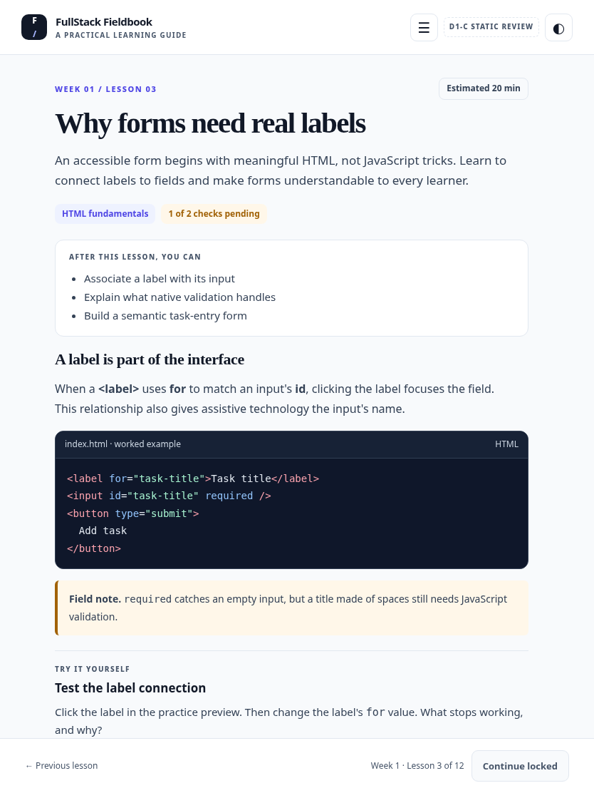
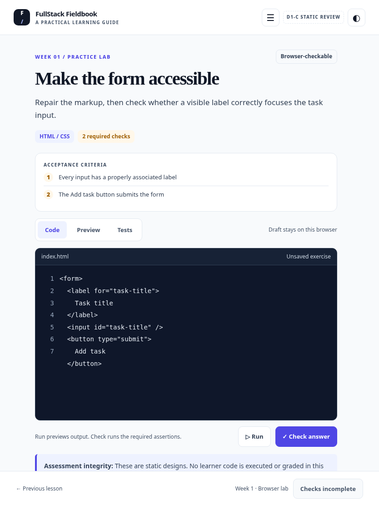
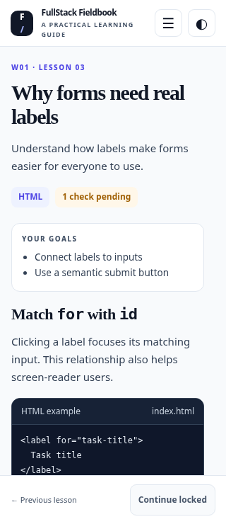
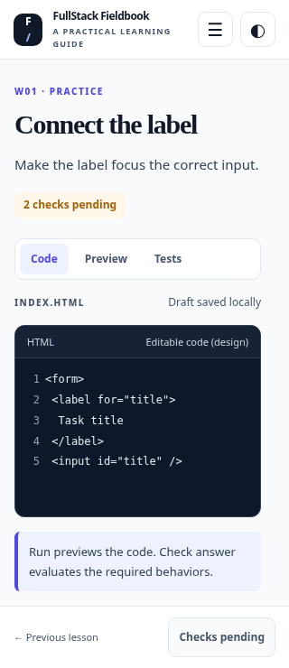
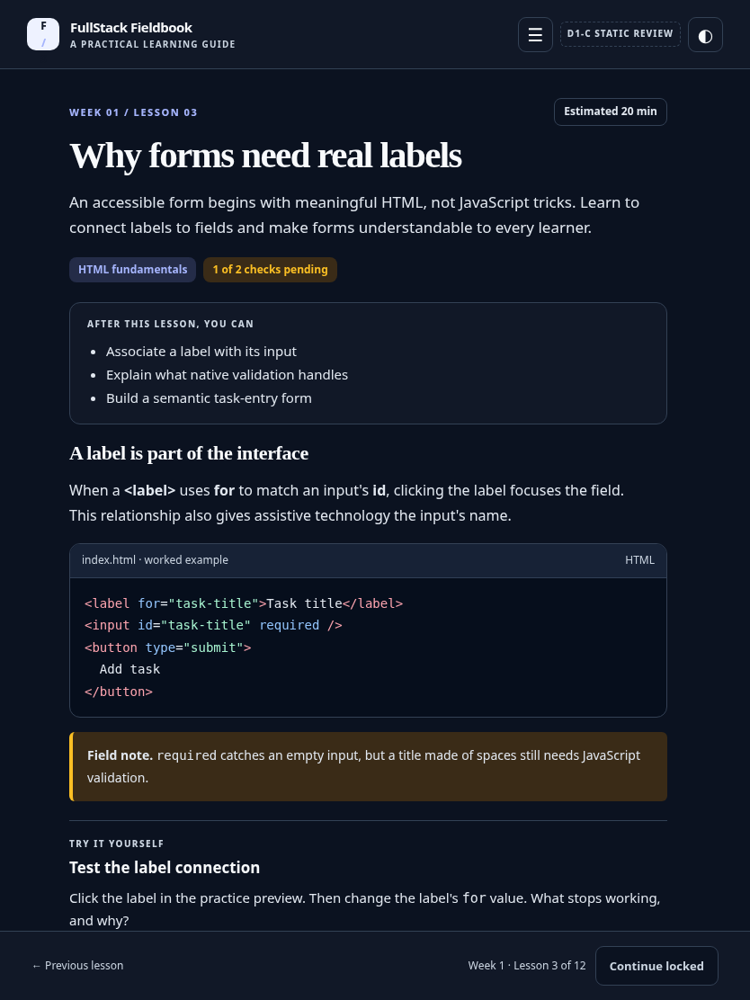
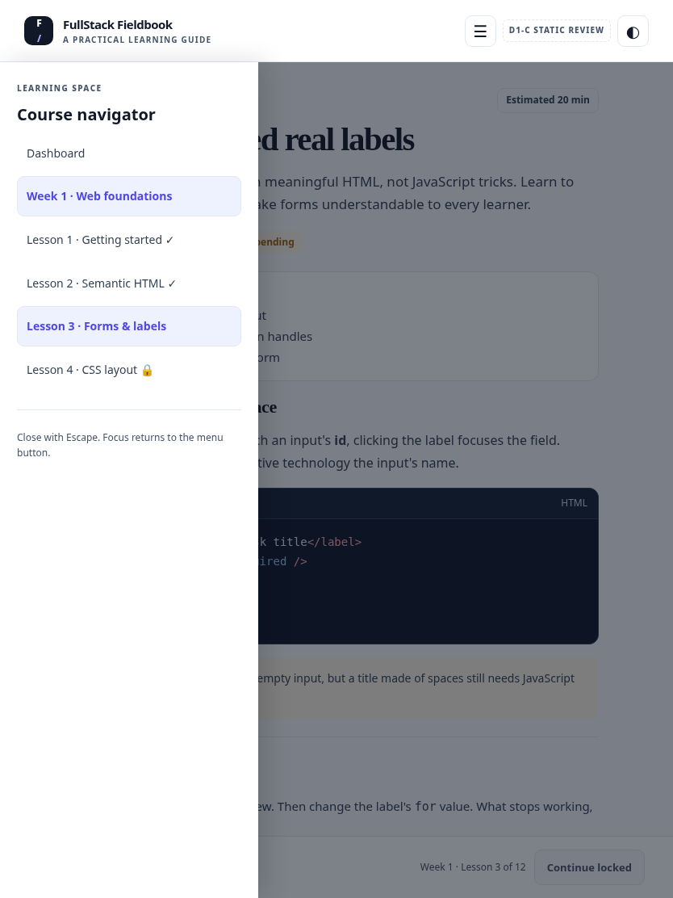
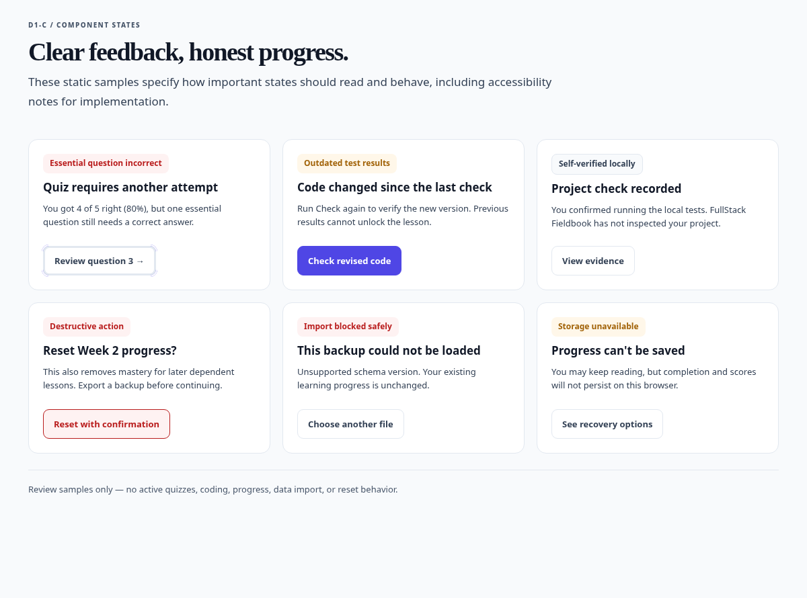

FullStack Fieldbook / D1-C
Design finishing review
Tablet layouts, 320px reflow, dark reader styling, navigation drawer, and critical component feedback states. These files are static design artifacts, not the learning application or functioning assessments. D1 and D2 remain unsigned.


Tablet Reader LightStatic D1-C design review

Tablet Lab LightStatic D1-C design review

320 Reader LightStatic D1-C design review

320 Lab LightStatic D1-C design review

Tablet Reader DarkStatic D1-C design review

Tablet Course DrawerStatic D1-C design review

Component States DesktopStatic D1-C design review